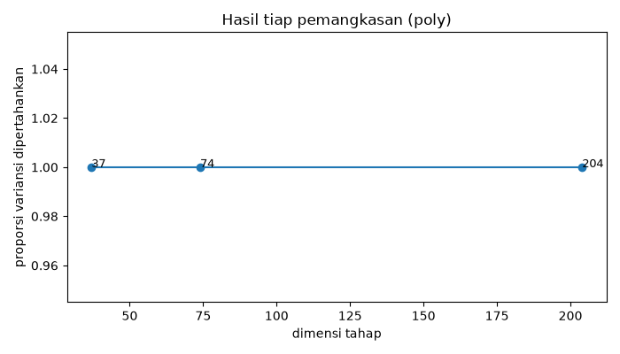
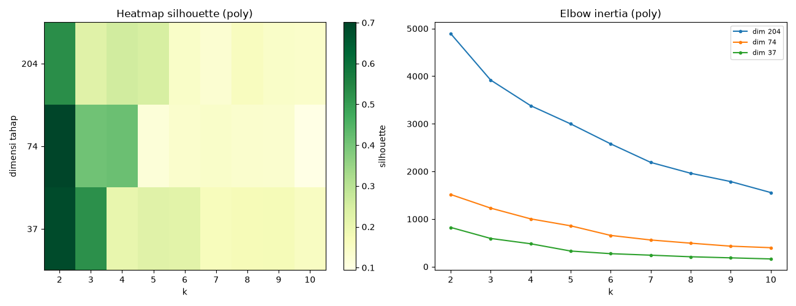
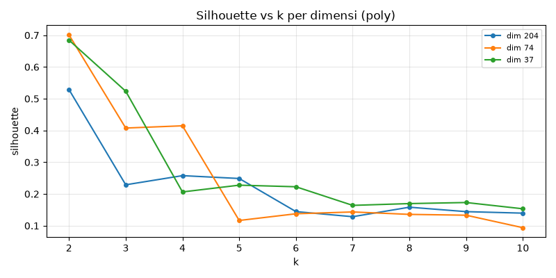
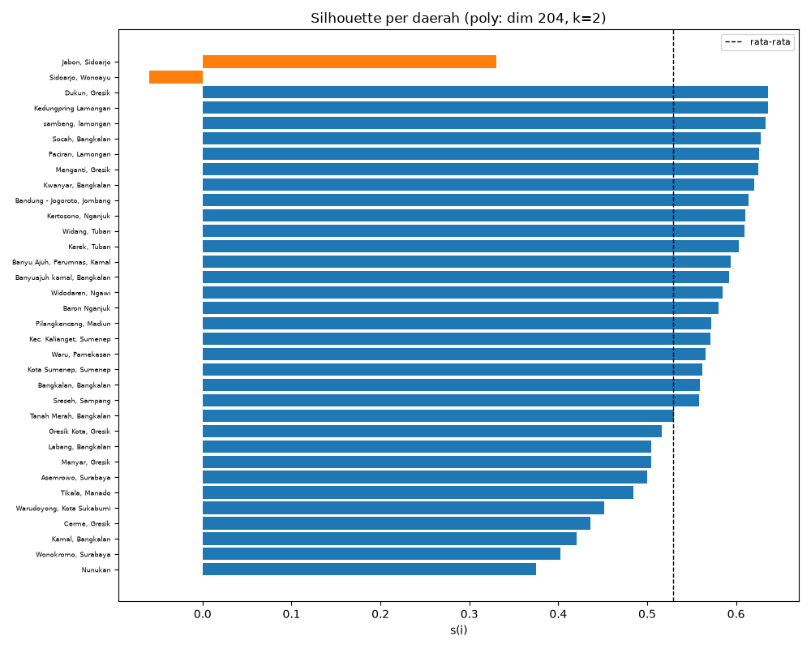
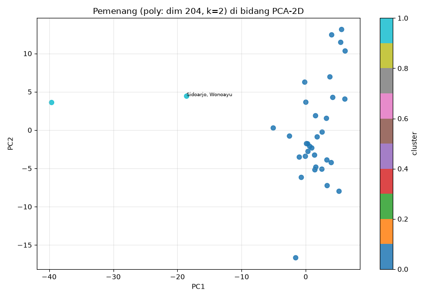
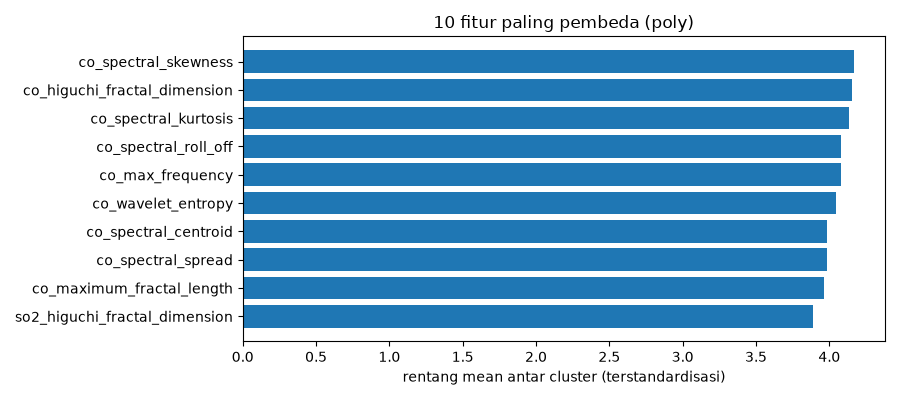

5.6b Eksperimen Gabungan 204 Fitur — Varian POLYNOMIAL#
Pemetaan tugas PSD: menggabungkan 3 polutan = 204 kolom (68 NO2 + 68 SO2 + 68 CO, interpolasi polynomial) → reduksi dimensi 204 → 74 → 37 → hasil clustering tiap dimensi → eksperimen cluster terbaik via silhouette → peta di notebook 5.7.
Sumber sudah gabungan 3 polutan (data/ekstraksi_fitur_polynomial.csv, 36 baris × 204 fitur, missing=0), sehingga Fase 0 hanya menormalisasi kunci daerah + agregasi mean observasi ganda (Kamal & Kwanyar, 36 → 34 daerah). Koreksi atas notebook 5.6 lama yang memakai data/downloads/ekstraksi fitur/ekstraksi_fitur_{co,no2,so2}.csv (33 daerah lengkap). Catatan: “203” di rumusan tugas = typo untuk 204 (68×3).
Pemenang = silhouette tertinggi dengan min_size≥2 (tanpa singleton — jujur, karena reduksi 74/37 kolaps menjadi outlier tunggal sehingga skor mentahnya semu tinggi).
import matplotlib
matplotlib.use("Agg")
import matplotlib.pyplot as plt
import numpy as np
import pandas as pd
import os
import json
from IPython.display import Image, display
SEED = 42
SRC = "../data/ekstraksi_fitur_polynomial.csv"
TAG = "poly"
OUT = "../data/processed"
IMG = "../data/images/eksperimen204_poly"
LADDER = [204, 74, 37]
os.makedirs(OUT, exist_ok=True)
os.makedirs(IMG, exist_ok=True)
Fase 0 — Matriks 204 fitur (kunci daerah + agregasi duplikat)#
36 baris → 34 daerah unik (Kamal & Kwanyar diobservasi 2×, diagregasi mean). Komposisi diverifikasi: 68 NO2 + 68 SO2 + 68 CO.
def norm_daerah(s):
return " ".join(str(s).strip().lower().split())
df = pd.read_csv(SRC)
feat204 = [c for c in df.columns if c not in ("id", "nama", "daerah")]
assert len(feat204) == 204, f"{len(feat204)} fitur, bukan 204!"
pref = pd.Series([c.split("_")[0] for c in feat204]).value_counts().to_dict()
assert pref == {"no2": 68, "so2": 68, "co": 68}, f"komposisi {pref}"
df["key"] = df["daerah"].map(norm_daerah)
dup = df[df.duplicated("key", keep=False)].sort_values("key")
print(f"duplikat (diagregasi mean): {sorted(dup['daerah'].unique().tolist())}")
g = df.groupby("key")
agg = g[feat204].mean()
agg.insert(0, "daerah", g["daerah"].first())
agg = agg.reset_index(drop=True)
print(f"matriks: {len(agg)} daerah x {len(feat204)} fitur, missing={int(agg[feat204].isna().sum().sum())}")
agg[["daerah"] + feat204].to_csv(f"{OUT}/clustering_{TAG}_204.csv", index=False)
print("tersimpan:", f"{OUT}/clustering_{TAG}_204.csv", agg.shape)
duplikat (diagregasi mean): ['Kamal, Bangkalan', 'Kwanyar, Bangkalan']
matriks: 34 daerah x 204 fitur, missing=0
tersimpan: ../data/processed/clustering_poly_204.csv (34, 205)
Fase 1 — Reduksi bertahap 204 → 74 → 37#
Peringkat variansi (dihitung sebelum standardisasi) + StandardScaler. retained_var = proporsi variansi dipertahankan — inilah “hasil yang ditunjukkan” tiap pemangkasan. Catatan jujur: nilainya ≈1.0 di semua tahap karena variansi didominasi segelintir fitur berskala besar (mis. ecdf_slope); pemangkasan variansi mentah praktis tak membuang variansi, sehingga tahap 74/37 tetap rawan kolaps (terbukti di Fase 2).
from sklearn.preprocessing import StandardScaler
dfm = pd.read_csv(f"{OUT}/clustering_{TAG}_204.csv")
feat = [c for c in dfm.columns if c != "daerah"]
Xraw = dfm[feat].to_numpy()
var_rank = np.argsort(Xraw.var(axis=0))[::-1]
total_var = float(Xraw.var(axis=0).sum())
lad_rows = []
for d in LADDER:
keep = sorted(var_rank[:d].tolist())
cols = [feat[i] for i in keep]
Xs = StandardScaler().fit_transform(dfm[cols].to_numpy())
pd.DataFrame(Xs, columns=cols).to_csv(f"{OUT}/X_{TAG}_{d}.csv", index=False)
retained = float(Xraw[:, var_rank[:d]].var(axis=0).sum() / total_var)
lad_rows.append({"dimensi": d, "n_fitur": len(cols), "retained_var": round(retained, 4)})
print(f"tahap {d}: {len(cols)} fitur, retained_var={retained:.4f}")
lad_df = pd.DataFrame(lad_rows)
lad_df.to_csv(f"{OUT}/ladder_{TAG}.csv", index=False)
fig, ax = plt.subplots(figsize=(7, 4))
ax.plot(lad_df["dimensi"], lad_df["retained_var"], marker="o")
for _, r in lad_df.iterrows():
ax.annotate(str(int(r['dimensi'])), (r['dimensi'], r['retained_var']), fontsize=9)
ax.set_xlabel("dimensi tahap"); ax.set_ylabel("proporsi variansi dipertahankan")
ax.set_title(f"Hasil tiap pemangkasan ({TAG})")
fig.tight_layout(); fig.savefig(f"{IMG}/fig_ladder_var.png", dpi=100)
display(Image(filename=f"{IMG}/fig_ladder_var.png"))
tahap 204: 204 fitur, retained_var=1.0000
tahap 74: 74 fitur, retained_var=1.0000
tahap 37: 37 fitur, retained_var=1.0000

Fase 2 — Grid penuh + cluster terbaik via silhouette#
Setiap tahap × k=2..10 (random_state=42, n_init=10, max_iter=300) = 27 konfigurasi. Pemenang = silhouette tertinggi dengan min_size≥2 (tanpa singleton), diteruskan ke 5.7 via best_config_{TAG}.json + labels_best_{TAG}.csv. Peringkat mentah dilaporkan transparan.
from sklearn.cluster import KMeans
from sklearn.metrics import silhouette_score
res = []
for d in LADDER:
Xd = pd.read_csv(f"{OUT}/X_{TAG}_{d}.csv").to_numpy()
for k in range(2, 11):
km = KMeans(n_clusters=k, random_state=SEED, n_init=10, max_iter=300)
lab = km.fit_predict(Xd)
sil = float(silhouette_score(Xd, lab))
sizes = pd.Series(lab).value_counts().sort_index()
res.append({"dimensi": d, "k": k, "silhouette": sil,
"inertia": float(km.inertia_), "seed": SEED,
"min_size": int(sizes.min()),
"ukuran_cluster": ";".join(map(str, sizes.tolist()))})
grid = pd.DataFrame(res)
grid.to_csv(f"{OUT}/clustering_grid_{TAG}.csv", index=False)
print(f"total konfigurasi: {len(grid)}")
print(grid.sort_values("silhouette", ascending=False).head(8).to_string(index=False))
valid = grid[grid["min_size"] >= 2].sort_values("silhouette", ascending=False)
print("\nTERBAIK VALID (min_size>=2):")
print(valid.head(5)[["dimensi", "k", "silhouette", "ukuran_cluster"]].to_string(index=False))
win = valid.iloc[0]
best = {"varian": TAG, "dimensi": int(win["dimensi"]), "k": int(win["k"]),
"silhouette": float(win["silhouette"]), "inertia": float(win["inertia"]),
"seed": SEED, "ukuran_cluster": str(win["ukuran_cluster"]),
"aturan": "silhouette tertinggi dengan min_size>=2 (tanpa singleton)"}
with open(f"{OUT}/best_config_{TAG}.json", "w") as f:
json.dump(best, f, indent=2)
dim_best = best["dimensi"]
Xd = pd.read_csv(f"{OUT}/X_{TAG}_{dim_best}.csv").to_numpy()
lab = KMeans(n_clusters=best["k"], random_state=SEED, n_init=10,
max_iter=300).fit_predict(Xd)
pd.DataFrame({"daerah": dfm["daerah"].tolist(), "cluster": lab}).to_csv(
f"{OUT}/labels_best_{TAG}.csv", index=False)
print("\nPEMENANG (diteruskan ke 5.7):", best)
piv = grid.pivot(index="dimensi", columns="k", values="silhouette").loc[LADDER]
fig, axes = plt.subplots(1, 2, figsize=(13, 5))
im = axes[0].imshow(piv.to_numpy(), aspect="auto", cmap="YlGn")
axes[0].set_xticks(range(len(piv.columns))); axes[0].set_xticklabels(piv.columns)
axes[0].set_yticks(range(len(piv.index))); axes[0].set_yticklabels(piv.index)
axes[0].set_xlabel("k"); axes[0].set_ylabel("dimensi tahap")
axes[0].set_title(f"Heatmap silhouette ({TAG})")
fig.colorbar(im, ax=axes[0], label="silhouette")
for d in LADDER:
gg = grid[grid["dimensi"] == d].sort_values("k")
axes[1].plot(gg["k"], gg["inertia"], marker="o", ms=3, label=f"dim {d}")
axes[1].set_title(f"Elbow inertia ({TAG})"); axes[1].set_xlabel("k")
axes[1].legend(fontsize=8)
fig.tight_layout(); fig.savefig(f"{IMG}/fig_heatmap_elbow.png", dpi=100)
display(Image(filename=f"{IMG}/fig_heatmap_elbow.png"))
fig2, ax2 = plt.subplots(figsize=(8, 4))
for d in LADDER:
gg = grid[grid["dimensi"] == d].sort_values("k")
ax2.plot(gg["k"], gg["silhouette"], marker="o", ms=4, label=f"dim {d}")
ax2.set_xlabel("k"); ax2.set_ylabel("silhouette")
ax2.set_title(f"Silhouette vs k per dimensi ({TAG})")
ax2.legend(fontsize=8); ax2.grid(True, alpha=0.3)
fig2.tight_layout(); fig2.savefig(f"{IMG}/fig_silhouette_per_dim.png", dpi=100)
display(Image(filename=f"{IMG}/fig_silhouette_per_dim.png"))
total konfigurasi: 27
dimensi k silhouette inertia seed min_size ukuran_cluster
74 2 0.701022 1516.194525 42 1 33;1
37 2 0.684536 824.726199 42 1 33;1
204 2 0.528761 4895.841527 42 2 32;2
37 3 0.523575 592.545025 42 1 31;2;1
74 4 0.414668 1003.612484 42 1 30;2;1;1
74 3 0.407603 1229.797091 42 1 31;2;1
204 4 0.257685 3380.485300 42 2 22;2;8;2
204 5 0.248704 2997.518342 42 1 22;2;7;2;1
TERBAIK VALID (min_size>=2):
dimensi k silhouette ukuran_cluster
204 2 0.528761 32;2
204 4 0.257685 22;2;8;2
204 3 0.228870 2;23;9
PEMENANG (diteruskan ke 5.7): {'varian': 'poly', 'dimensi': 204, 'k': 2, 'silhouette': 0.5287610677419752, 'inertia': 4895.841526509352, 'seed': 42, 'ukuran_cluster': '32;2', 'aturan': 'silhouette tertinggi dengan min_size>=2 (tanpa singleton)'}


Visualisasi — Diagram silhouette per sampel (pemenang)#
Setiap batang = satu daerah. Batang panjang = sangat cocok di clusternya; pendek = ambigu.
from sklearn.cluster import KMeans
from sklearn.metrics import silhouette_samples
best = json.load(open("{}/best_config_{}.json".format(OUT, TAG)))
Xd = pd.read_csv("{}/X_{}_{}.csv".format(OUT, TAG, best['dimensi'])).to_numpy()
dfm = pd.read_csv("{}/clustering_{}_204.csv".format(OUT, TAG))
lab_best = KMeans(n_clusters=best['k'], random_state=SEED, n_init=10,
max_iter=300).fit_predict(Xd)
s_vals = silhouette_samples(Xd, lab_best)
order = np.argsort(lab_best * 100 + s_vals)
names = dfm["daerah"].tolist()
cmap = plt.get_cmap("tab10")
bar_colors = [cmap(int(lab_best[i]) % 10) for i in order]
fig, ax = plt.subplots(figsize=(10, 8))
ax.barh(range(len(s_vals)), s_vals[order], color=bar_colors)
ax.axvline(s_vals.mean(), color="black", ls="--", lw=1, label="rata-rata")
ax.set_yticks(range(len(s_vals)))
ax.set_yticklabels([names[i] for i in order], fontsize=6)
ax.set_xlabel("s(i)")
ax.set_title("Silhouette per daerah ({}: dim {}, k={})".format(TAG, best['dimensi'], best['k']))
ax.legend(fontsize=8)
fig.tight_layout(); fig.savefig("{}/fig_silhouette_samples.png".format(IMG), dpi=100)
display(Image(filename="{}/fig_silhouette_samples.png".format(IMG)))

Visualisasi — Sebaran cluster di bidang PCA-2D + fitur pembeda#
204 dimensi diringkas ke PC1 vs PC2 agar terlihat mata; diagram batang menunjukkan 10 fitur paling pembeda antar cluster pemenang.
from sklearn.decomposition import PCA
from sklearn.preprocessing import StandardScaler
Xm = StandardScaler().fit_transform(dfm[[c for c in dfm.columns if c != "daerah"]].to_numpy())
P2 = PCA(n_components=2, random_state=SEED).fit_transform(Xm)
kbest = len(set(lab_best))
fig, ax = plt.subplots(figsize=(9, 6))
sc = ax.scatter(P2[:, 0], P2[:, 1], c=lab_best, s=45, cmap="tab10", alpha=0.85)
fig.colorbar(sc, ax=ax, label="cluster")
for i in range(len(dfm)):
if s_vals[i] < 0.3:
ax.annotate(dfm.loc[i, "daerah"], (P2[i, 0], P2[i, 1]), fontsize=7)
ax.set_xlabel("PC1"); ax.set_ylabel("PC2")
ax.set_title("Pemenang ({}: dim {}, k={}) di bidang PCA-2D".format(TAG, best['dimensi'], best['k']))
ax.grid(True, alpha=0.3)
fig.tight_layout(); fig.savefig("{}/fig_cluster_pca2d.png".format(IMG), dpi=100)
display(Image(filename="{}/fig_cluster_pca2d.png".format(IMG)))
means = [Xm[lab_best == k].mean(axis=0) for k in range(kbest)]
spread = pd.Series(np.max(means, axis=0) - np.min(means, axis=0),
index=[c for c in dfm.columns if c != "daerah"])
top = spread.sort_values(ascending=False).head(10)
fig2, ax2 = plt.subplots(figsize=(9, 4))
ax2.barh(top.index[::-1], top.values[::-1])
ax2.set_xlabel("rentang mean antar cluster (terstandardisasi)")
ax2.set_title("10 fitur paling pembeda ({})".format(TAG))
fig2.tight_layout(); fig2.savefig("{}/fig_top_pembeda.png".format(IMG), dpi=100)
display(Image(filename="{}/fig_top_pembeda.png".format(IMG)))
print(top.to_string())


co_spectral_skewness 4.171286
co_higuchi_fractal_dimension 4.156815
co_spectral_kurtosis 4.132333
co_spectral_roll_off 4.080734
co_max_frequency 4.080734
co_wavelet_entropy 4.043714
co_spectral_centroid 3.986026
co_spectral_spread 3.985271
co_maximum_fractal_length 3.960747
so2_higuchi_fractal_dimension 3.887780
Kesimpulan dan cara menjalankan ulang#
Pemenang tersimpan di
data/processed/best_config_poly.json+labels_best_poly.csvdan dibaca notebook 5.7 (satu peta per varian).Tambah daerah ke file sumber lalu jalankan ulang: ladder, grid, saringan, dan peta ikut mutakhir.
Pasangan notebook ini:
5.6a= linear,5.6b= polynomial (run_56ab.py= versi skrip keduanya).
Unduh Berkas Hasil Eksperimen Polynomial#
clustering_poly_204.csv — Matriks 34 daerah x 204 fitur (polynomial):
Unduh clustering_poly_204.csvclustering_grid_poly.csv — Grid 27 konfigurasi + silhouette:
Unduh clustering_grid_poly.csvbest_config_poly.json — Konfigurasi pemenang:
Unduh best_config_poly.jsonlabels_best_poly.csv — Label cluster pemenang:
Unduh labels_best_poly.csvladder_poly.csv — Tabel ladder 204-74-37:
Unduh ladder_poly.csv